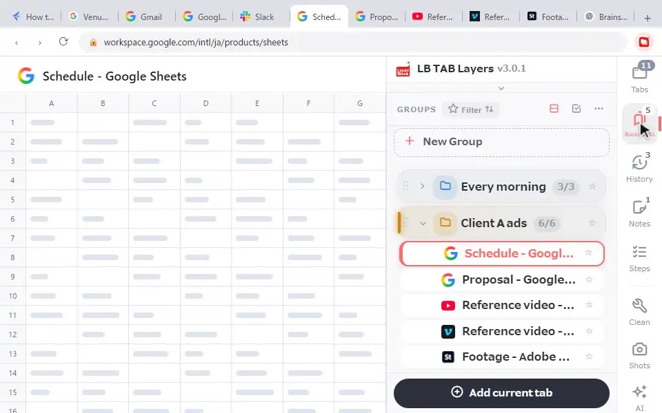

To turn on vertical tabs in Chrome, right-click an empty space on the tab strip (or any tab) and choose “Show Tabs Vertically.” Choose “Show Tabs Horizontally” to switch back. Vertical tabs show every page title, let you scroll the list and resize it. They change how open tabs are displayed — to actually have fewer tabs open, pair them with a way to save tabs by project and reopen them later.
In spring 2026, Chrome added vertical tabs as a built-in option. Your tabs move from the top of the window to a list on the side, and every title stays readable. Here is how to turn them on and off, based on Google’s own help page, and how to get the most out of them.
How to turn on vertical tabs in Chrome
There are several ways; they all do the same thing.
| From | What to do |
|---|---|
| The tab strip | Right-click an empty space → Show Tabs Vertically |
| A tab | Right-click the tab → Show Tabs Vertically |
| Settings | Settings → Appearance → Tab position → Vertical |
| The ⋮ menu | More ⋮ → More tools → Show Tabs Vertically |
| Mac menu bar | View → Show Tabs Vertically |
How to switch back to horizontal tabs
Use the same menu and choose Show Tabs Horizontally, or go to Settings → Appearance → Tab position and pick Horizontal.
What vertical tabs can do
- Show every page title — titles no longer shrink to a sliver as you open more tabs.
- Scroll the tab list — with many tabs open, you scroll up and down to find one.
- Resize the list — drag it wider or narrower to fit your screen.
- Collapse it — in the collapsed view, hovering shows tab group names and page titles.
If you usually have 20 or 30 tabs open, readable titles are a real improvement.
What vertical tabs don’t do
Vertical tabs change how your open tabs are displayed. They don’t change how many you have open. Forty open tabs become forty rows.
Most people keep tabs open for one reason: if they close them, they won’t find them again. A new layout doesn’t solve that. What helps is a place to put tabs away by project, so you can close them and bring the whole set back later.
Pair vertical tabs with LB TAB Layers
LB TAB Layers is the Chrome extension we built for our own studio work. It does a different job from vertical tabs, so the two work well together.
| Chrome vertical tabs | LB TAB Layers | |
|---|---|---|
| Job | Show open tabs in a readable vertical list | Save tabs by project, close them, reopen them later |
| Closed tabs | (It lists open tabs only) | Saved as Chrome bookmarks, so closing doesn’t lose them |
| Switching projects | — | ■ closes a project’s tabs, ▶ opens the next one |
| Structure | Chrome tab groups | Groups with subgroups, e.g. client > stage |
The best part is what ▶ does. When you open a saved group with ▶, its tabs open as a Chrome tab group with the same name and color — so with vertical tabs on, the project appears as one tidy group in your side list. When you’re done, ■ closes the whole group. (Look for “Open groups as Chrome tab groups” in the settings.)
Let vertical tabs show what you’re working on now, and let LB TAB Layers hold everything for later. Your vertical list then only ever contains the current project.

Summary
- Turn on: right-click the tab strip or a tab → Show Tabs Vertically
- Turn off: Show Tabs Horizontally, or Settings → Appearance → Tab position → Horizontal
- They show every title, scroll, resize and collapse
- They change the display, not the number of tabs — pair them with saving tabs by project
More ways to work in Chrome’s side area: use the Chrome side panel as a tab manager.
Frequently asked questions
Q. How do I get vertical tabs in Chrome?
Right-click an empty space on the tab strip, or any tab, and choose “Show Tabs Vertically.” You can also go to Settings → Appearance → Tab position and pick Vertical.
Q. How do I turn off vertical tabs in Chrome?
Choose “Show Tabs Horizontally” from the same menu, or set Tab position to Horizontal in Settings → Appearance.
Q. Do vertical tabs reduce the number of open tabs?
No. They change how open tabs are displayed. To keep fewer tabs open, save tabs by project so you can close them and reopen the set later.
Q. Can I use vertical tabs with LB TAB Layers?
Yes. When you open a saved group with ▶, it opens as a Chrome tab group with the same name and color, which then shows up in your vertical tab list.
See it in action


Put your vertical tabs away by project.
▶ opens a project as a Chrome tab group, ■ closes it. Saved as Chrome bookmarks, so nothing is lost. No account.
Add to Chrome — it's free →